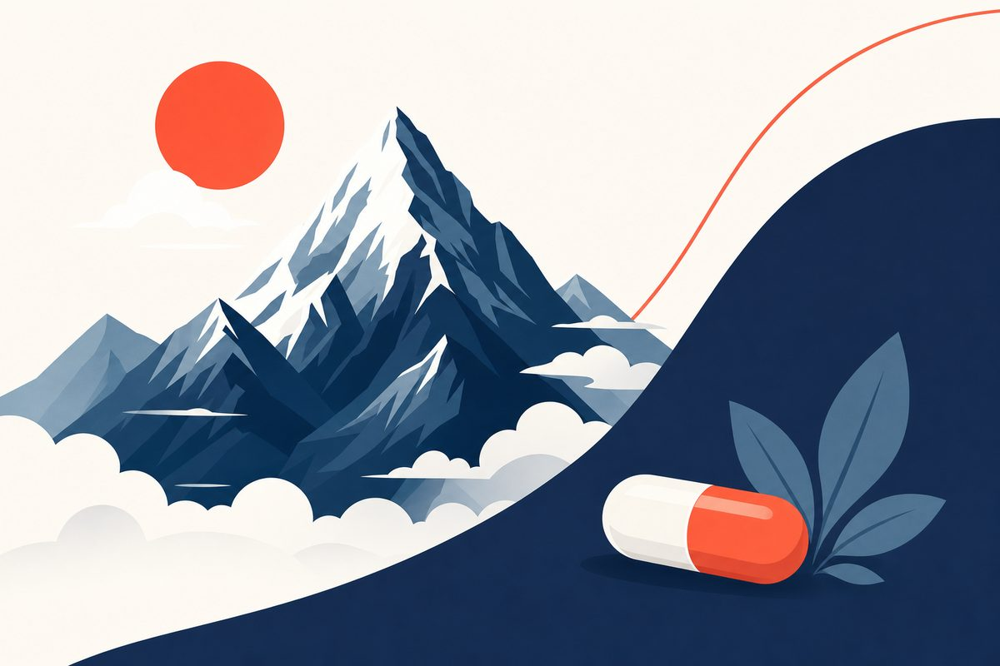
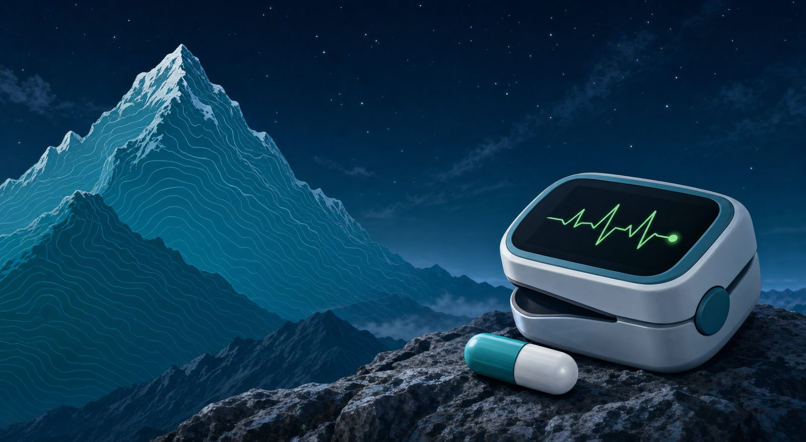
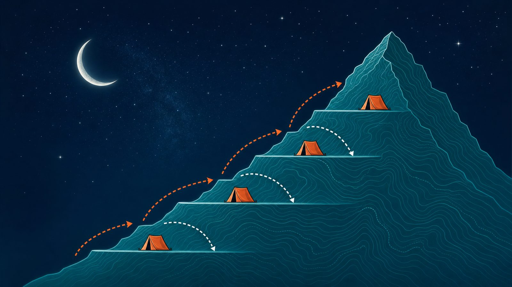

Key Takeaways
- Altitude sickness (AMS) is common: about 25% of visitors sleeping above 2,450 m (8,000 ft) in Colorado develop it, and training and physical fitness do not affect the risk.[2]
- Above 3,000 m, the Wilderness Medical Society (WMS) advises raising your sleeping elevation by no more than 500 m per day and taking a rest day every 3–4 days.[12]
- The standard acetazolamide prevention dose is 125 mg every 12 hours, started the day before ascent.[2] In an Everest-region trial, this dose lowered AMS from 24.7% with placebo to 12.2%.[3]
- The CDC states that people allergic to sulfa antibiotics can take acetazolamide; WMS lists prior anaphylaxis to any sulfonamide or a history of Stevens-Johnson syndrome as contraindications.[2][12]
- HACE (brain swelling) and HAPE (fluid in the lungs) are emergencies. Evacuation to a lower altitude is the definitive treatment, and medication is given with descent or while waiting for it, not instead of it.[9]
- Ginkgo biloba was no better than placebo in a large randomized trial, while acetazolamide was clearly protective.[8]


What Altitude Sickness Is
Altitude sickness is not a single disease. It is a spectrum of conditions that develop when the body ascends faster than it can adapt to the lower oxygen pressure of thin air. At around 3,050 m (10,000 ft), the inspired oxygen pressure is only 69% of that at sea level, and acute exposure can lower arterial oxygen saturation to 88–91%. The body's response to that drop in oxygen drives the altitude illness spectrum.[2]
Three syndromes define the spectrum. Acute Mountain Sickness (AMS) is the most common: headache plus other symptoms such as nausea, fatigue, or dizziness after a recent gain in altitude.[10] It generally resolves within 12–48 hours if the traveler does not ascend farther.[2] High Altitude Cerebral Edema (HACE) is considered the end stage of AMS.[2] It is marked by a change in mental status, ataxia (loss of coordination), or both.[10] High Altitude Pulmonary Edema (HAPE) is fluid in the lungs. It can occur by itself or together with AMS and HACE, and it can be more rapidly fatal than HACE.[2]
About 25% of all visitors sleeping above 2,450 m (8,000 ft) in Colorado develop AMS.[2] Higher and faster is worse: in a systematic review of prevention trials, the mean AMS rate with placebo above 4,000 m was 67% (range 25% to 100%), and it depended on the rate of ascent.[11] The good news: AMS is largely preventable with gradual ascent, medication when the itinerary calls for it, and early recognition. The challenge is knowing which tool to use, when to use it, and when altitude illness has crossed into territory that requires descent rather than medication.
Who Gets Altitude Sickness
Susceptibility to altitude illness is partly genetic, and there is no simple screening test to predict it. Training and physical fitness do not affect risk. Children are as susceptible as adults, and people older than 50 have slightly less risk. How you responded to altitude before is the most reliable guide for future trips, as long as the altitude and ascent rate are similar.[2] In a cohort of travelers to Cusco, obesity and female sex were associated with higher AMS risk.[15]
The CDC Yellow Book rates three factors to place a traveler at low, medium, or high risk of AMS, assuming the trip starts below 1,200 m (4,000 ft):[2]
- History of altitude illness: none or mild AMS (low); moderate to severe AMS (medium); prior HAPE or HACE (high).
- Sleeping altitude on the first night: below 2,750 m (9,000 ft) (low); 2,750–3,400 m (9,000–11,150 ft) (medium); above 3,400 m (11,150 ft) (high).
- Ascent rate above 3,000 m: under 500 m of sleeping-altitude gain per day (low); more than 500 m per day with an extra acclimatization day for every 1,000 m (medium); more than 500 m per day without those extra days (high).
The CDC's recommendations follow the category. Low risk: acetazolamide prophylaxis is not indicated. Medium risk: acetazolamide would be beneficial, so consider it. High risk: strongly encourage acetazolamide and have the traveler carry dexamethasone for emergency use.[2] WMS says prophylactic medications are generally not necessary in low-risk situations but should be considered, in addition to gradual ascent, in moderate- to high-risk situations.[12]
Some conditions need extra planning. WMS advises that medication to prevent HAPE be considered only for people with a prior history of HAPE, especially multiple episodes.[12] In the CDC's table of pre-existing conditions, sickle cell trait and mild pulmonary hypertension require caution, while sickle cell anemia and pulmonary hypertension with a pulmonary artery systolic pressure above 60 mm Hg are listed as contraindications.[2]
Fitness still helps with the physical work of a trek, but it is not protection, and a fit traveler who climbs fast is still climbing fast. Plan the ascent rate first.
Recognition: AMS Symptoms and the Lake Louise Score
AMS begins with headache, and that distinction matters. Under the 2018 Lake Louise AMS Score, AMS is defined as a total of three or more points from four rated symptoms, with at least one point from headache, after a recent ascent or gain in altitude. Symptoms can develop within 6 hours of a gain in altitude, and the consensus group recommends scoring only after 6 hours at the new altitude.[10]
The 2018 Lake Louise Score rates four symptoms, each from 0 to 3:
- Headache (0 = none at all; 3 = severe headache, incapacitating)
- Gastrointestinal symptoms
- Fatigue and/or weakness
- Dizziness/light-headedness
The consensus group suggested 3–5 points as mild AMS, 6–9 as moderate, and 10–12 as severe, while noting that research to support formal severity rankings is lacking. A change in mental status or ataxia points to HACE, which must not be confused with AMS.[10] HACE calls for immediate descent.[9]
Seek immediate descent if any of these develop: loss of coordination (unable to walk a straight line), confusion or altered mental status, coughing with frothy or pink-tinged sputum, breathlessness at rest, cyanosis (blue lips or fingernails), or inability to carry out normal activities. These are the hallmarks of HACE and HAPE, conditions that can be fatal.
Disturbed sleep was removed from the Lake Louise score in 2018 because it is more likely due to altitude hypoxia itself and is not closely related to AMS.[10] Above about 2,700 m (9,000 ft), some degree of periodic breathing during sleep becomes nearly universal and can interrupt sleep.[2] Poor sleep without headache does not meet the AMS definition.
Prevention: Acclimatization Rules First
Gradual ascent is the most important prevention strategy, more important than any medication. The WMS 2024 guideline was written by an expert panel that grades each recommendation by the quality of the supporting evidence,[1] and an independent 2025 appraisal of that guideline lists gradual ascent as a strong recommendation based on moderate-quality evidence.[19] In WMS's own words, the first priority should be ensuring gradual ascent to the target elevation.[12]
The practical rules for itinerary planning above 3,000 m:
- Maximum sleeping altitude gain: no more than 500 m per day once above 3,000 m[12]
- Rest days: a rest day, with no ascent to a higher sleeping elevation, every 3–4 days[12]
- Intermediate acclimatization: acclimatizing for at least 2–3 nights at around 2,450–2,750 m (8,000–9,000 ft) before going higher is markedly protective against AMS,[2] and even one night at an intermediate altitude lowers risk[12]
- Symptom rule: never ascend to sleep at a higher altitude while you have symptoms of altitude illness[2]
Many trekking itineraries also add daytime hikes above the planned sleeping altitude, a pattern often called "climb high, sleep low." The sleeping-altitude limits above are what the cited guidance actually specifies, so build the itinerary around them first.

The "climb high, sleep low" strategy: daily excursions reach higher elevations while sleeping camps remain lower.
Drink enough to stay comfortably hydrated, but more is not better: WMS lists "forced" or "over" hydration among interventions that have not been shown to be of benefit.[12]
The CDC advises avoiding alcohol for the first 48 hours at high altitude, and says respiratory depressants such as alcohol and opiates should not be used to aid sleep at high altitude.[2]
The CDC also advises only mild exercise for the first 48 hours at altitude.[2] Light walking and easy activity are fine; save hard efforts until you have had time to adjust.
Pharmacologic Prevention
Acetazolamide (Diamox): First-Line
Acetazolamide is the best-studied medication for AMS prevention. It inhibits carbonic anhydrase in the kidney, which causes bicarbonate loss in the urine and a mild metabolic acidosis. The resulting fall in pH stimulates the central chemoreceptors to respond more fully to low oxygen, so the traveler breathes more.[4]
Standard dosing: 125 mg by mouth every 12 hours, beginning the day before ascent and continuing the first two days at altitude, and longer if ascent continues.[2] WMS gives the same 125 mg every 12 hours for low- to moderate-risk ascent profiles and says to consider 250 mg twice daily for high-risk ascent profiles.[12] In the Basnyat 2003 randomized controlled trial, run in the Everest region of Nepal between Pheriche (4,243 m) and Lobuje (4,937 m), 125 mg twice daily lowered AMS from 24.7% with placebo to 12.2%, a 50.6% relative risk reduction with a number needed to treat of 8.[3] A 2021 meta-analysis of 22 trials found that 125, 250, and 375 mg twice daily all significantly reduced AMS, with no evidence of an association between efficacy and dose.[4] The FDA-approved label lists 500 mg to 1,000 mg daily in divided doses for acute mountain sickness; the lower 125 mg twice-daily regimen comes from the guidelines and trials above.[20]
Children: the WMS and CDC dosing tables list a pediatric prevention dose of 1.25 mg/kg every 12 hours, up to 125 mg per dose.[2][12] The FDA label states that safety and effectiveness in pediatric patients have not been established,[20] and the UIAA's 2008 statement on children advises against drug prophylaxis except in rare cases when rapid ascent is unavoidable.[13] A child's dose should come from a clinician who knows the itinerary.
Side effects: in a systematic review of prevention trials, tingling (paresthesia) and increased urination were reported with acetazolamide.[11] Carbonated drinks can taste different, because acetazolamide lets you taste the carbon dioxide on your tongue.[2]
The Sulfa Allergy Question
One of the most common questions about acetazolamide: "Can I take it if I'm allergic to sulfa drugs?" The CDC Yellow Book notes that acetazolamide is a sulfonamide derivative, but cross-sensitivity between antimicrobial sulfonamides and acetazolamide, a non-antimicrobial sulfonamide, has not been reported, and states that people allergic to sulfa antibiotics can take acetazolamide.[2] The FDA label is more cautious: it warns that cross-sensitivity between acetazolamide, sulfonamides, and other sulfonamide derivatives is possible.[20]
The chemistry explains why reactions are uncommon. Sulfonamide antibiotics such as sulfamethoxazole carry an amine group at the N4 position, and most hypersensitivity reactions to them result from metabolites formed at that position. Nonantibiotic sulfonamides, including carbonic anhydrase inhibitors such as acetazolamide, do not contain an N4 amine group. In a 2011 case report, three patients with a history of severe skin rash from sulfonamide antibiotics were prescribed acetazolamide and had no adverse reaction.[6] A 2004 retrospective case series of 34 patients with a self-reported sulfa allergy found little clinical or pharmacological evidence that such an allergy is likely to produce a life-threatening cross-reaction with acetazolamide; of 27 patients who received acetazolamide, 2 had urticaria and none had a severe allergic cross-reaction.[7]
WMS describes the risk of an allergic reaction in people with sulfonamide allergy as extremely low and lists two firm contraindications: any prior anaphylactic reaction to a sulfonamide medication, or a history of Stevens-Johnson syndrome.[12] Anyone with a sulfa allergy history should review the specific reaction with a physician before travel.
Dexamethasone
Dexamethasone prevents AMS. A 2000 systematic review of randomized trials found that dexamethasone 8–16 mg prevented AMS (relative risk 2.50, 95% CI 1.71–3.66; number needed to treat 2.8).[11] WMS lists a prevention dose of 2 mg every 6 hours or 4 mg every 12 hours, started the day before ascent.[12]
The critical distinction from acetazolamide: dexamethasone does not facilitate acclimatization.[12] If it is stopped at altitude before acclimatization, mild rebound can occur,[2] and in the systematic review, adverse reactions including depression occurred after it was stopped abruptly.[11] WMS advises tapering over one week if it has been used for longer than 5–7 days, considers higher doses (4 mg every 6 hours) only in very high-risk situations such as military or search and rescue personnel airlifted above 3,500 m, and does not recommend it for AMS prevention in children.[12]
Ibuprofen
In a 2012 randomized controlled trial, ibuprofen 600 mg three times daily, started 6 hours before ascent from 1,240 m to 3,810 m in the White Mountains of California, reduced AMS compared with placebo (43% vs 69%; odds ratio 0.3; number needed to treat 3.9).[5] The 2024 WMS guideline grades ibuprofen as a weak recommendation based on moderate-quality evidence, for people who cannot use acetazolamide or dexamethasone.[19] WMS states that ibuprofen cannot be recommended over acetazolamide or dexamethasone for AMS prevention during rapid ascent, but that it could be used by people who do not wish to take those medications or have allergies or intolerance to them.[12]
Ginkgo Biloba: Negative Evidence
Ginkgo biloba preparations are widely marketed for altitude sickness prevention. The clinical evidence does not support this use. In a 2004 randomized, double-blind trial of 614 trekkers on the approach to Everest base camp (487 completed the trial), ginkgo was not significantly different from placebo for any outcome. AMS occurred in 34% with placebo, 35% with ginkgo, 12% with acetazolamide 250 mg twice daily, and 14% with ginkgo plus acetazolamide.[8] Travelers using ginkgo for altitude prevention should know the evidence does not support benefit, and it should not replace proven strategies.
Combination Strategies
For high-risk travelers, the CDC advises strongly encouraging acetazolamide prophylaxis and having the traveler carry dexamethasone for emergency use.[2] Standby dexamethasone does not replace descent: in severe AMS or HACE, it should be used in conjunction with evacuation or while waiting for it.[9]
Pharmacologic Prevention: Evidence Comparison
| Medication | Mechanism | Prevention Dose | Evidence Level | Main Side Effects | Best For |
|---|---|---|---|---|---|
| Acetazolamide (Diamox) | Carbonic anhydrase inhibitor → bicarbonate loss and metabolic acidosis → stronger breathing response to low oxygen[4] | 125 mg PO every 12 h, starting the day before ascent; consider 250 mg twice daily for high-risk ascent profiles[2][12] | Strong recommendation, high-quality evidence (WMS 2024)[19] | Paresthesia, increased urination, altered taste of carbonated drinks[2][11] | Medium- and high-risk travelers in the CDC risk table[2] |
| Dexamethasone | Corticosteroid; does NOT facilitate acclimatization[12] | 2 mg PO every 6 h or 4 mg PO every 12 h, starting the day before ascent[12] | Strong recommendation, high-quality evidence (WMS 2024, 2 mg every 6 h)[19] | Mild rebound if stopped at altitude before acclimatization; reactions including depression after abrupt withdrawal[2][11] | Alternative to acetazolamide; emergency standby for high-risk travelers; HACE treatment[2][12] |
| Ibuprofen | Nonsteroidal anti-inflammatory drug | 600 mg PO three times daily (trial started 6 hours before ascent)[5] | Weak recommendation, moderate-quality evidence (WMS 2024)[19] | Standard NSAID precautions apply | People who cannot or do not wish to take acetazolamide or dexamethasone[12] |
| Ginkgo Biloba | Herbal supplement; no established benefit for altitude illness | N/A: not recommended | Not effective: no different from placebo in a randomized trial[8] | Added to acetazolamide, AMS 14% vs 12% with acetazolamide alone[8] | Not recommended for AMS prevention |
When Altitude Sickness Becomes an Emergency: HACE and HAPE
AMS is uncomfortable; HACE and HAPE are potentially fatal. Understanding the distinction, and acting on it immediately, is the most important altitude medicine skill any traveler can develop.
High Altitude Cerebral Edema (HACE)
HACE is AMS that has crossed into neurological territory. The defining features are ataxia (unsteady gait; test by asking the person to walk a straight line heel to toe) and altered mental status. Ataxia is typically the earliest finding and may progress to lethargy, altered mental status, or even seizures.[9] Either finding in a person at altitude is a HACE emergency until proven otherwise.
HACE management:
- Descend immediately. Immediate evacuation to a lower altitude is the definitive treatment for severe AMS and HACE, and symptoms resolve after a drop of 1,000 to 3,000 ft (roughly 300 to 900 m).[9]
- Dexamethasone 8 mg once, then 4 mg every 6 hours, by mouth, intramuscular, or intravenous injection, used with evacuation or while waiting for it.[2][9]
- Supplemental oxygen, if available; an oxygen saturation (SpO2) above 90% is usually adequate.[12]
- Portable hyperbaric chamber for severe AMS and HACE when evacuation is delayed.[9]
Dexamethasone and oxygen are given while preparing for and during descent, not instead of descent.[9]
High Altitude Pulmonary Edema (HAPE)
HAPE can occur by itself or together with AMS and HACE, and it can be more rapidly fatal than HACE, so early diagnosis is key. Initial symptoms include chest congestion, cough, exaggerated breathlessness on exertion, and decreased exercise performance.[2]
HAPE management:
- Descend. Descent is urgent and mandatory.[2] WMS advises trying to descend at least 1,000 m or until symptoms resolve, with as little exertion as possible during descent.[12]
- Supplemental oxygen, when available, sufficient to achieve an SpO2 above 90% or relieve symptoms.[12]
- Nifedipine extended-release, 30 mg every 12 hours or 20 mg every 8 hours, when descent is impossible or delayed and reliable access to supplemental oxygen or portable hyperbaric therapy is unavailable. Tadalafil or sildenafil can be used when, in addition, nifedipine is unavailable. A portable hyperbaric chamber can be used when descent is infeasible or delayed.[12]
Because HAPE can be more rapidly fatal than HACE,[2] the threshold for evacuating someone with suspected HAPE should be very low. Waiting and watching is not appropriate when someone cannot breathe comfortably at rest at altitude.
Special Populations
Pregnancy
The CDC Yellow Book notes that there are no studies or case reports describing fetal harm among women who briefly travel to high altitude during their pregnancy. Nevertheless, it says healthcare professionals might be prudent to recommend that pregnant women do not stay at sleeping altitudes above 3,050 m (10,000 ft), and that high-altitude travel during pregnancy warrants confirmation of good maternal health and a low-risk gestation.[2]
Medication choices are also narrower. The acetazolamide label reports that the drug has been shown to be teratogenic (limb defects) in mice, rats, hamsters, and rabbits, and says it should be used in pregnancy only if the potential benefit justifies the potential risk to the fetus.[20] That makes gradual ascent, shorter stays at altitude, and conservative itinerary planning even more important. Any pregnant traveler planning altitude travel should talk with a physician before departure.
Children
Children are as susceptible to altitude illness as adults.[2] The UIAA's 2008 consensus statement on children says slow graded ascent is necessary and that drug prophylaxis to aid acclimatization in childhood should be strictly avoided, because there are no data or experience. Only in rare cases, when a rapid ascent is unavoidable, might acetazolamide be warranted, after medical advice and with doses adjusted to body weight.[13] For those cases, the WMS and CDC dosing tables list 1.25 mg/kg every 12 hours, up to 125 mg per dose.[2][12]
The UIAA statement notes increased risk for children with sickle cell disease or thalassaemia, and lists children with cystic fibrosis, Down syndrome, or a current respiratory tract infection among those at risk for HAPE.[13] Plan these trips with the child's own physician.
Pre-Existing Cardiac and Pulmonary Disease
Data on altitude travel for people with reduced heart or lung reserve are limited.[14] The CDC Yellow Book's table of pre-existing conditions lists coronary artery disease after revascularization as likely no extra risk, coronary artery disease that has not been revascularized as requiring caution, and a heart attack or stroke within 90 days before ascent as a contraindication.[2]
For lung disease, the same table lists moderate chronic obstructive pulmonary disease (COPD) as requiring caution and severe COPD as a contraindication.[2]
Pulmonary hypertension is listed as requiring caution when mild, and as a contraindication when the pulmonary artery systolic pressure is above 60 mm Hg.[2] Anyone with these conditions should plan altitude travel with their own physician.
Common High-Altitude Destinations: What to Know
The same prevention principles apply everywhere above roughly 2,500 m (8,200 ft): gradual ascent, acetazolamide when ascent is rapid, and recognition of warning symptoms. What changes from destination to destination is the itinerary risk profile: how high the sleeping altitude is, how fast travelers reach it, and what acclimatization options exist along the way. Each entry below describes elevation, typical arrival risk, and acclimatization considerations, with a source wherever a claim depends on one.
This is educational reference content. None of these destination summaries replace a pre-travel consultation, and individual risk depends on personal history, pre-existing conditions, and the specific itinerary chosen.
Colorado: Denver, the Front Range, and Ski Resort Towns
Denver (1,609 m / 5,280 ft) sits at moderate altitude: generally low risk for clinically significant AMS, but high enough that some travelers from sea level notice mild fatigue or sleep disruption on the first night. Some travelers use Denver as a first-night stop before driving to the resorts. WMS notes that sleeping one night at an intermediate altitude lowers risk,[12] although the CDC's 2–3 night staging advice refers to 2,450–2,750 m, well above Denver.[2]
The Front Range ski destinations sit substantially higher. Approximate sleeping elevations: Breckenridge town 2,926 m (9,600 ft), Vail village 2,475 m (8,120 ft) with summit 3,527 m (11,570 ft), Aspen 2,422 m (7,945 ft), Keystone 2,829 m (9,280 ft), Copper Mountain 2,926 m (9,600 ft), and Leadville 3,094 m (10,152 ft), the highest incorporated city in the United States. Per the CDC Yellow Book chapter on high-altitude travel, about 25% of visitors sleeping above 2,450 m (8,000 ft) in Colorado develop AMS.[2] AMS generally resolves within 12–48 hours if travelers do not ascend farther.[2]
For Colorado ski trips, practical options include a first night at an intermediate elevation,[12] choosing lower-elevation lodging for the first night, and keeping to mild exercise and no alcohol for the first 48 hours.[2] In the CDC risk table, a first-night sleeping altitude of 2,750–3,400 m falls in the medium-risk band, where acetazolamide would be beneficial and should be considered.[2]
Cusco and Machu Picchu, Peru
Cusco sits at about 3,350 m (11,000 ft),[2] and most international travelers fly in from Lima at sea level, so the first-night sleeping altitude lands in the CDC's medium-risk band.[2] Counterintuitively, Machu Picchu sits at 2,430 m (7,972 ft), meaningfully lower than Cusco. The popular framing of Machu Picchu as the altitude challenge is backward: most altitude symptoms on this route start in Cusco, not at the citadel.
In a cohort of 142 foreign language students arriving in Cusco between 2012 and 2016, 39% had AMS. Taking acetazolamide was associated with lower odds of AMS (odds ratio 0.13, 95% CI 0.03–0.56), drinking coca leaf tea was not associated with a lower risk, and obesity and female sex were associated with higher risk.[15] The CDC notes that in some cases, including Cusco and La Paz, travelers can descend to elevations lower than the airport to sleep for 1–2 nights and then begin their ascent, perhaps avoiding the need for medication.[2] For Cusco, that usually means the lower Sacred Valley.
Itinerary tip: visiting Machu Picchu first (lower) and Cusco last (higher) reverses the standard tourist flow but gives a built-in acclimatization gradient. Travelers planning the Inca Trail face the highest exposure, since Dead Woman's Pass reaches 4,215 m (13,829 ft), and should allow acclimatization nights in Cusco or the Sacred Valley before starting the trek.
La Paz and El Alto, Bolivia
La Paz sits at about 3,650 m (12,000 ft),[2] and travelers arrive at El Alto International Airport (LPB), which sits even higher at 4,061 m (13,325 ft), the highest international airport in the world. The CDC notes that some common high-altitude destinations require rapid ascent by airplane to above 3,400 m (11,150 ft), and with rates of altitude illness approaching 50% in these situations, a low threshold for chemoprophylaxis is advised.[2]
Practical considerations for La Paz: where it is possible, sleeping 1–2 nights at an elevation lower than the airport before ascending may avoid the need for medication.[2] When it is not, acetazolamide started the day before arrival, mild exercise only, and no alcohol for the first 48 hours are the standard preventive measures.[2] Travelers continuing to Lake Titicaca (3,812 m), the Uyuni salt flats (3,656 m), or Potosí (4,090 m) face sustained high-altitude exposure that compounds initial acclimatization challenges.
Lhasa and the Tibetan Plateau
Lhasa, Tibet, sits at about 3,700 m (12,100 ft)[2] and is reached by most travelers via a fast train from Xining or a direct flight from mainland Chinese cities. Both routes deliver passengers to high altitude over hours rather than days. For rapid ascent by airplane to above 3,400 m, the CDC reports rates of altitude illness approaching 50%.[2] Onward travel to Tibetan plateau destinations such as Shigatse (3,840 m), Everest Base Camp North Side (5,200 m), or the Mount Kailash circuit (5,630 m at Drolma La pass) extends altitude exposure well into the very-high and extreme-altitude ranges.
Pre-travel chemoprophylaxis is the rule rather than the exception for Lhasa itineraries. In the CDC risk table, a first-night sleeping altitude above 3,400 m falls in the high-risk band, where acetazolamide prophylaxis is strongly encouraged and dexamethasone is carried for emergency use.[2] Travelers with any history of HACE or HAPE should not undertake Tibet plateau travel without specialist consultation.
Mount Kilimanjaro, Tanzania
Kilimanjaro's Uhuru Peak (5,895 m / 19,341 ft) is one of the highest commonly attempted trekking summits. In a 2009 study of 312 trekkers on the Marangu route, whose huts sit at 2,700 m, 3,700 m, and 4,700 m, 139 of the 181 trekkers with complete data (77%) developed AMS and 111 (61%) reached the summit. AMS and summit success were similar on the 4- and 5-day schedules; on the 5-day schedule, trekkers who used acetazolamide were less likely to develop AMS and more likely to summit.[16] A 2016 study of 175 trekkers on a 6-day ascent via the Rongai route found AMS in 52.6% (Lake Louise score of 3 or more) and summit success of 88%, a lower AMS incidence and better summit success than earlier reports from 4- and 5-day ascents.[17]
Route length matters. The authors of the Marangu study concluded that trekkers ideally need a more gradual route profile,[16] and the 6-day study concluded that the risk can be mitigated by a slower ascent.[17] Across randomized trials, acetazolamide roughly halves AMS incidence (relative risk 0.51),[4] but no medication replaces a longer itinerary. Descend at the first signs of worsening AMS or any sign of HACE or HAPE.
Mexico City and Other Moderate-Altitude Capitals
Mexico City sits at 2,240 m (7,349 ft): moderate altitude, below the range where AMS is common, but high enough that some unacclimatized travelers report mild symptoms in the first 24 hours. The city's airport (Benito Juárez International) is at city elevation; nearby Toluca International is higher at 2,580 m. A 2022 Revista de Investigación Clínica review noted that re-entry high-altitude pulmonary edema, a form of HAPE that develops in residents who travel to sea level and return, has been reported in the Valley of Mexico.[18]
Other moderate-altitude capitals in a similar elevation band include Bogotá (2,640 m), Quito (2,850 m), and Addis Ababa (2,355 m). In the CDC risk table, a first-night sleeping altitude below 2,750 m with no more than mild prior AMS falls in the low-risk band, where acetazolamide prophylaxis is not indicated.[2] Travelers with significant heart or lung disease, pulmonary hypertension, or sickle cell trait should still have a pre-travel consultation regardless of how "moderate" the destination sounds.[2]
Nepal: Kathmandu, Everest Base Camp Trek, and Annapurna Circuit
Kathmandu (1,400 m) is low enough to pose minimal altitude risk on arrival, but trekking destinations beyond it span the full range of altitude medicine concerns. The Everest Base Camp trek reaches 5,364 m at base camp itself and 5,545 m at Kala Patthar; the Annapurna Circuit crosses Thorong La pass at 5,416 m. Both itineraries involve sleeping altitudes above 4,000 m for multiple consecutive nights, and the CDC notes that some itineraries, particularly Everest base camp, push the limits of many people's ability to acclimatize.[2]
The WMS ascent rules apply directly: above 3,000 m, raise sleeping elevation by no more than 500 m per day, with a rest day every 3–4 days.[12] Descend immediately for any sign of HACE or HAPE.[9] For high-risk itineraries, the CDC advises acetazolamide prophylaxis and carrying dexamethasone for emergency use.[2] Trekkers should know the location of the nearest aid post along their route.
Choosing a Pre-Travel Approach by Destination
The destinations above span a wide range of itinerary risk. The CDC Yellow Book risk table combines prior history of altitude illness, first-night sleeping altitude, and ascent rate to place a traveler in a low, medium, or high risk category, and its recommendations follow directly from that category.[2]
- Low risk (for example, a first night in Denver or Mexico City, with no more than mild prior AMS): education on warning symptoms is the main intervention; acetazolamide prophylaxis is not indicated.[2]
- Medium risk (for example, a first night in Colorado resort lodging at 2,750–3,400 m, or flying straight into Cusco): acetazolamide would be beneficial, so consider it.[2] A night at an intermediate elevation lowers risk.[12]
- High risk (for example, flying straight into La Paz or Lhasa, an ascent of more than 500 m per day above 3,000 m without extra acclimatization days as on the Marangu route, or any prior HAPE or HACE): strongly encourage acetazolamide prophylaxis and carry dexamethasone for emergency use.[2] Pre-travel consultation is strongly advised, particularly for travelers with cardiopulmonary disease, sickle cell trait, prior HAPE or HACE, or pregnancy.
Whether a pre-travel altitude visit happens via telehealth or in person, the consultation should result in a documented risk category, an acetazolamide prescription when appropriate, written information about warning symptoms, and a clear plan for what to do, and whom to contact, if symptoms develop on the trip.
What Telehealth Can and Cannot Do
Altitude medicine occupies a clearly defined place in telehealth-appropriate care. Pre-travel consultation and acetazolamide prescribing are well suited to telemedicine and genuinely valuable. But altitude illness emergencies are explicitly not telehealth territory. Understanding that boundary could save a life.
Telehealth-Appropriate
- Pre-travel risk assessment: Reviewing the planned itinerary, altitude profile, prior AMS history, and underlying health conditions to determine appropriate pharmacologic prophylaxis
- Acetazolamide prescription: For travelers assessed as medium or high risk under the CDC and WMS risk frameworks, a telehealth visit is an appropriate pathway for obtaining a prescription
- Dexamethasone standby prescription: For high-risk travelers (prior HACE, expedition profiles) who need emergency dexamethasone to carry for field use
- Acclimatization planning: Reviewing the itinerary and suggesting staging nights, rest days, and maximum altitude gains per night
- Education about recognition: Teaching travelers the Lake Louise Score criteria, the ataxia test, and the three cardinal altitude medicine rules
- Post-travel symptom review: Evaluating mild AMS symptoms that have fully resolved
Requires In-Person or At-Altitude Evaluation
- HACE evaluation: Ataxia and altered mental status require immediate physical examination, not a video call
- HAPE assessment: Auscultating lungs, measuring oxygen saturation by pulse oximetry, and assessing respiratory distress require in-person evaluation or field assessment by a trained wilderness medicine provider
- Pulse oximetry interpretation in the field: SpO2 readings at altitude require context, because the expected range depends on the altitude; a telehealth provider cannot safely interpret these readings without that field context
- Evacuation decisions: The call to descend, and how urgently, requires direct assessment of gait, consciousness, and respiratory status
- Oxygen administration: Requires equipment and trained providers on site
- Severe or worsening AMS: Any traveler whose symptoms get worse despite rest or treatment at the same elevation needs to descend and be assessed directly, not monitored remotely[2]
The clearest rule in altitude medicine applies here too: when in doubt, descend. No telehealth consultation should delay that action.
Frequently Asked Questions
Usually yes, after a physician reviews the reaction. The CDC Yellow Book states that people allergic to sulfa antibiotics can take acetazolamide.[2] Sulfonamide antibiotics carry an N4 amine group that drives most of their hypersensitivity reactions, and acetazolamide does not contain it.[6] WMS lists two contraindications: any prior anaphylactic reaction to a sulfonamide medication, or a history of Stevens-Johnson syndrome.[12] The FDA label notes that cross-sensitivity is possible,[20] so discuss the specific nature of your reaction with a physician before your trip.
Drink enough to stay comfortably hydrated, but more is not better: WMS lists "forced" or "over" hydration among interventions that have not been shown to be of benefit.[12] Gradual ascent and, when needed, acetazolamide are the proven prevention steps.
Coca tea (mate de coca) is widely offered to arriving travelers in Bolivia, Peru, and other high-altitude South American countries. WMS states that chewed coca leaves, coca tea, and other coca-derived products have not been shown to be of benefit.[12] In a cohort of travelers to Cusco, drinking coca leaf tea was not associated with a lower risk of AMS.[15] It should not be used as a substitute for proven prevention strategies.
Only rarely. The UIAA's 2008 statement on children says drug prophylaxis to aid acclimatization in childhood should be strictly avoided, because there are no data or experience, and that acetazolamide might be warranted only in rare cases when rapid ascent is unavoidable, after medical advice and with doses adjusted to body weight.[13] For those cases, the WMS and CDC dosing tables list 1.25 mg/kg every 12 hours, up to 125 mg per dose.[2][12] The FDA label states that safety and effectiveness in pediatric patients have not been established.[20] Children with sickle cell disease, thalassaemia, cystic fibrosis, Down syndrome, or a current respiratory infection face higher risk[13] and need a pre-travel visit with a physician who knows their history.
Fitness helps you handle the physical demands of a trip, but the CDC Yellow Book states that training and physical fitness do not affect the risk of altitude illness.[2] Train for the physical challenges of your trip, and still plan a gradual ascent.
Stop ascending: never go up to sleep at a higher altitude while you have symptoms, and descend if symptoms get worse despite rest or treatment at the same elevation.[2] AMS improves rapidly with a descent of 300 m (1,000 ft) or more.[2] Loss of coordination (ataxia) or confusion signals HACE and calls for immediate descent; medication is given with descent or while waiting for it, not instead of it.[9]
Not as a routine prevention tool for most travelers. WMS says short-term oxygen from over-the-counter canisters should not be relied on.[12] Supplemental oxygen is most useful as emergency treatment for HACE or HAPE while descent is organized, with an SpO2 above 90% usually adequate.[12] Pulse oximeter readings are normally lower at altitude, and the CDC provides an expected range for each altitude, so readings need to be interpreted in that context.[2]
Evacuation to a lower altitude is the definitive treatment for severe AMS, HACE, and HAPE, and it should start as soon as either HACE or HAPE is suspected.[9] For HACE, add dexamethasone 8 mg once, then 4 mg every 6 hours, if available.[12] For HAPE, give oxygen if available and try to descend at least 1,000 m or until symptoms resolve, with as little exertion as possible.[12] Do not wait until morning, and do not try to sleep it off.
Bottom Line
Altitude sickness is predictable and largely preventable. A sensible ascent itinerary above 3,000 m, with no more than 500 m of sleeping-elevation gain per day and a rest day every 3–4 days,[12] plus acetazolamide 125 mg every 12 hours for medium- and high-risk travelers,[2] addresses the main drivers of AMS risk. A sulfa antibiotic allergy is usually not a barrier to acetazolamide; prior anaphylaxis to a sulfonamide or a history of Stevens-Johnson syndrome is.[2][12]
HACE and HAPE are different animals. They are emergencies, not inconveniences. The treatment is descent, with dexamethasone and oxygen as adjuncts, not substitutes. A pre-travel telehealth visit is an effective and appropriate way to obtain acetazolamide, review the planned itinerary, and understand the warning signs before departure. What telehealth cannot do is manage an altitude emergency in the field. That requires a guide, a trained companion, a descent route, and sometimes a helicopter.
References
- Luks AM, Beidleman BA, Freer L, et al. "Wilderness Medical Society Clinical Practice Guidelines for the Prevention, Diagnosis, and Treatment of Acute Altitude Illness: 2024 Update." Wilderness & Environmental Medicine. 35(1_suppl):2S–19S. Published online December 27, 2023. PMID 37833187. https://pubmed.ncbi.nlm.nih.gov/37833187/
- Hackett PH, Shlim DR. "High-Altitude Travel and Altitude Illness." In: CDC Yellow Book 2026: Health Information for International Travel. Centers for Disease Control and Prevention. Page dated April 23, 2025. Accessed November 7, 2026. https://www.cdc.gov/yellow-book/hcp/environmental-hazards-risks/high-altitude-travel-and-altitude-illness.html
- Basnyat B, Gertsch JH, Johnson EW, et al. "Efficacy of low-dose acetazolamide (125 mg BID) for the prophylaxis of acute mountain sickness: a prospective, double-blind, randomized, placebo-controlled trial." High Altitude Medicine & Biology. 2003;4(1):45–52. https://pubmed.ncbi.nlm.nih.gov/12713711/
- Gao D, Wang Y, Zhang R, Zhang Y. "Efficacy of acetazolamide for the prophylaxis of acute mountain sickness: A systematic review, meta-analysis, and trial sequential analysis of randomized clinical trials." Annals of Thoracic Medicine. 2021;16(4):337–346. https://pmc.ncbi.nlm.nih.gov/articles/PMC8588948/
- Lipman GS, Kanaan NC, Holck PS, et al. "Ibuprofen prevents altitude illness: a randomized controlled trial for prevention of altitude illness with nonsteroidal anti-inflammatories." Annals of Emergency Medicine. 2012;59(6):484–490. https://pubmed.ncbi.nlm.nih.gov/22440488/
- Platt D, Griggs RC. "Use of acetazolamide in sulfonamide-allergic patients with neurologic channelopathies." Archives of Neurology. 69(4):527–529. Published online December 12, 2011. PMC3785308. https://pmc.ncbi.nlm.nih.gov/articles/PMC3785308/
- Lee AG, Anderson R, Kardon RH, Wall M. "Presumed 'sulfa allergy' in patients with intracranial hypertension treated with acetazolamide or furosemide: cross-reactivity, myth or reality?" American Journal of Ophthalmology. 2004;138(1):114–118. https://pubmed.ncbi.nlm.nih.gov/15234289/
- Gertsch JH, Basnyat B, Johnson EW, Onopa J, Holck PS. "Randomised, double blind, placebo controlled comparison of ginkgo biloba and acetazolamide for prevention of acute mountain sickness among Himalayan trekkers: the prevention of high altitude illness trial (PHAIT)." BMJ. 2004;328(7443):797. https://pmc.ncbi.nlm.nih.gov/articles/PMC383373/
- Clark ST, Sheraton M. "EMS High-Altitude Field Prophylaxis And Treatment." In: StatPearls [Internet]. Treasure Island (FL): StatPearls Publishing. Last update July 17, 2023. https://www.ncbi.nlm.nih.gov/books/NBK560677/
- Roach RC, Hackett PH, Oelz O, et al. "The 2018 Lake Louise Acute Mountain Sickness Score." High Altitude Medicine & Biology. 2018;19(1):4–6. PMC6191821. https://pmc.ncbi.nlm.nih.gov/articles/PMC6191821/
- Dumont L, Mardirosoff C, Tramèr MR. "Efficacy and harm of pharmacological prevention of acute mountain sickness: quantitative systematic review." BMJ. 2000;321(7256):267–272. https://pubmed.ncbi.nlm.nih.gov/10915127/
- Wilderness Medical Society. "2024 Altitude Summary." Wilderness Medicine Magazine. No author or date shown on the page. Accessed November 7, 2026. https://wms.org/magazine/magazine/1463/2024-Altitude-Summary/default.aspx
- Meijer HJ, Jean D. UIAA Medical Commission Consensus Statement No. 9: Children at Altitude. International Climbing and Mountaineering Federation (UIAA); 2008. https://www.theuiaa.org/documents/mountainmedicine/UIAA_MedCom_Rec_No_9_Children_at_Altitude_2008_V1-1.pdf
- Seccombe LM, Peters MJ. "Physiology in medicine: acute altitude exposure in patients with pulmonary and cardiovascular disease." Journal of Applied Physiology. 116(5):478–485. Published online December 26, 2013. https://pubmed.ncbi.nlm.nih.gov/24371015/
- Caravedo MA, Mozo K, Morales ML, et al. "Risk factors for acute mountain sickness in travellers to Cusco, Peru: coca leaves, obesity and sex." Journal of Travel Medicine. 2022;29(5):taab102. https://pubmed.ncbi.nlm.nih.gov/34230961/
- Davies AJ, Kalson NS, Stokes S, et al. "Determinants of summiting success and acute mountain sickness on Mt Kilimanjaro (5895 m)." Wilderness & Environmental Medicine. 2009;20(4):311–317. https://pubmed.ncbi.nlm.nih.gov/20030437/
- Lawrence JS, Reid SA. "Risk Determinants of Acute Mountain Sickness and Summit Success on a 6-Day Ascent of Mount Kilimanjaro (5895 m)." Wilderness & Environmental Medicine. 2016;27(1):78–84. https://pubmed.ncbi.nlm.nih.gov/26948557/
- Pérez-Padilla R. "Impact of moderate altitude on lung diseases and risk of high altitude illnesses." Revista de Investigación Clínica. 2022;74(5):232–243. https://pubmed.ncbi.nlm.nih.gov/36170185/
- Omidi A, Hawley GD, Kain D, et al. "What Is New in Altitude- and Cold-Related Illnesses of Travel: Appraisal and Summary of the Updated Guidelines from the Wilderness Medical Society." International Journal of Environmental Research and Public Health. 2025;22(2). doi:10.3390/ijerph22020284. PMC11855094. https://pmc.ncbi.nlm.nih.gov/articles/PMC11855094/
- Acetazolamide tablet [prescribing information]. Aarkish Pharmaceuticals NJ Inc. DailyMed, U.S. National Library of Medicine. Updated December 8, 2025. Accessed November 7, 2026. https://www.dailymed.nlm.nih.gov/dailymed/drugInfo.cfm?audience=professional&setid=ddfd44dc-3136-4dda-8ed0-eb2991c2a0b6